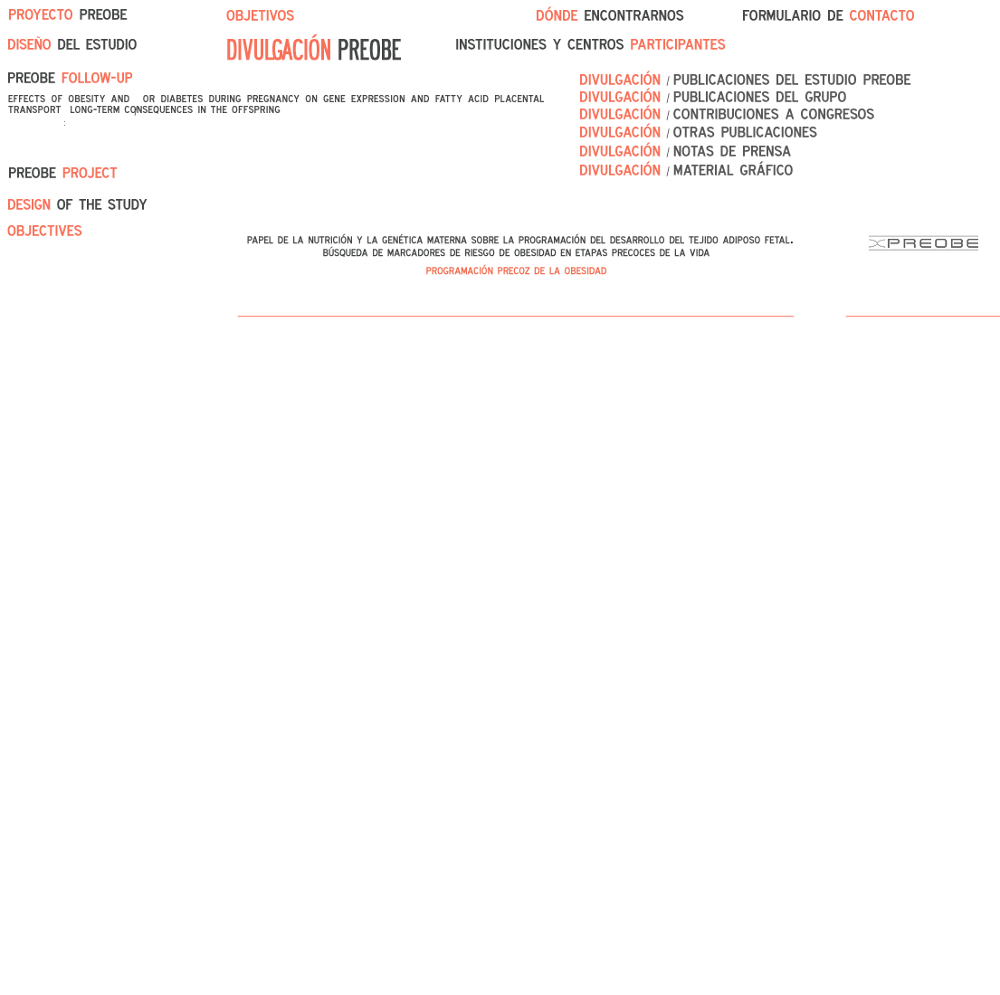

ENA / Máster Nutrenvigen
Biomedical Research Centre
Health Sciences
Technological Park [ PTS ]
Avda. del Conocimiento s/n
18100 Armilla, Granada
Euristikos Excellence Centre for Paediatric Research [ organizer ]
Free entrance!
SpeakersProf. Cristina Campoy
Prof. Alegría Carrasco
Prof. Marjo-Riitta Javerlin
Prof. Berthold Koletzko
Prof. Ascensión Marcos
Prof. Antonio Suarez
Prof. Michael Symonds
Internationally renowned scientists will present state-of-the-art information on interesting and timely topics related to
immunonutrition, the interaction between nutrition and immunity.
Main Topics:
Micronutrients and the immune system.
Probiotics, immunity & inflammation.
Prebiotics and the immune system.
Bioactive compounds and the immune system.
Lipids and the immune system.
Functional foods and the immune system.
Nutrition and immunity in different physiological states.
Nutrition and immunity in pathological states.
Nutrition and infection
(+)
El XI Congreso de la Federación Europea de Sociedades de Nutrición (FENS) reunirá por primera vez en España a los mayores expertos en nutrición quienes, durante cuatro días, analizarán las conclusiones de las últimas investigaciones científicas llevadas a cabo nacional e internacionalmente. Entre los temas más interesantes destacan los relacionados con la nutrición en las diferentes etapas de la vida, la alimentación intercultural,
la función de diferentes nutrientes en la salud humana, o la valoración de marcadores biológicos que faciliten la detección de diversas situaciones nutricionales.
El estudio de la obesidad cobrará especial relevancia en las mesas de debate y talleres,
donde se analizará la
sensación de saciedad, la
obesidad durante el embarazo o su asociación con la
genética.
(+)
En junio de 2011 celebraremos en Granada la XXXV Reunión anual de la Sociedad Española de Neurología Pediátrica. Para el comité organizador de este evento es una satisfacción presentaros el programa preliminar. Como sabéis el tema que se eligió por votación en la Reunión de Bilbao fue el de "Actualizaciones Diagnósticas en Neurología Neonatal", que hemos distribuido en tres mesas redondas: la primera, versará sobre
actualización de las nuevas técnicas de diagnóstico neonatal, seguirá una mesa que profundizará sobre el Neurodesarrollo y una tercera con una presentación interactiva de "actuación del Neuropediatra ante un recién nacido que convulsiona". Es nuestro deseo que un espacio quede para la presentación y discusión de las presentaciones en formato oral y pósters que tanto enriquecen nuestras reuniones.
(+)
El máster interuniversitario Nutrenvigen G+D Factors les invita a las conferencias organizadas por el Centro Eurístikos.
Ponente:
Dra. Mª José Noriega Borge.
Doctora en Ciencias Biológicas por la Universidad de Oviedo, Profesora en Fisiología de la Universidad de Cantabria, Coordinadora y Profesora del Máster Interuniversitario Nutrnvigen
G+D Factors en la Universidad de Cantabria y colaboradora del Grupo de Investigación Metabolismo Genética y Nutrición UC/IFIMAV.
Seminarios:
Día 15 de Junio: "Metodología de implementación de programas de actividad física en diferentes niveles institucionales".
Día 16 de Junio: "Fisiopatología de la obesidad: un punto de vista evolutivo".
Lugar:
Aula 3, Facultad de Medicina, a las 17hs
Más información:
Juan Carlos López-Robles
Centro Eurístikos
958 246 630
(+)
The Sixth Nutrimenthe General Assembly will take place in Warsaw, Poland at the Mamaison Le Regina Hotel which is situated in the Old Town of Warsaw within easy reach of the Frederic Chopin Airport.
The host of the meeting is the Children's Memorial Health Institute in Warsaw. The event is coordinated by Medius with kind support of Sequoia company, the partner of Martek in Poland.
In principle the meeting starts in the morning on March 17th (the hour depends on which WP or WG you participate in) and ends at 5:00 PM on March 18th (see Agenda for full details).
(+)
Language

Text size

Contact us
Centro Eurístikos
Facultad de Medicina
Avda. de Madrid, 11
18071 Granada
( 00 ) 34 958 023378
Web Development
nanokios@gmail.com